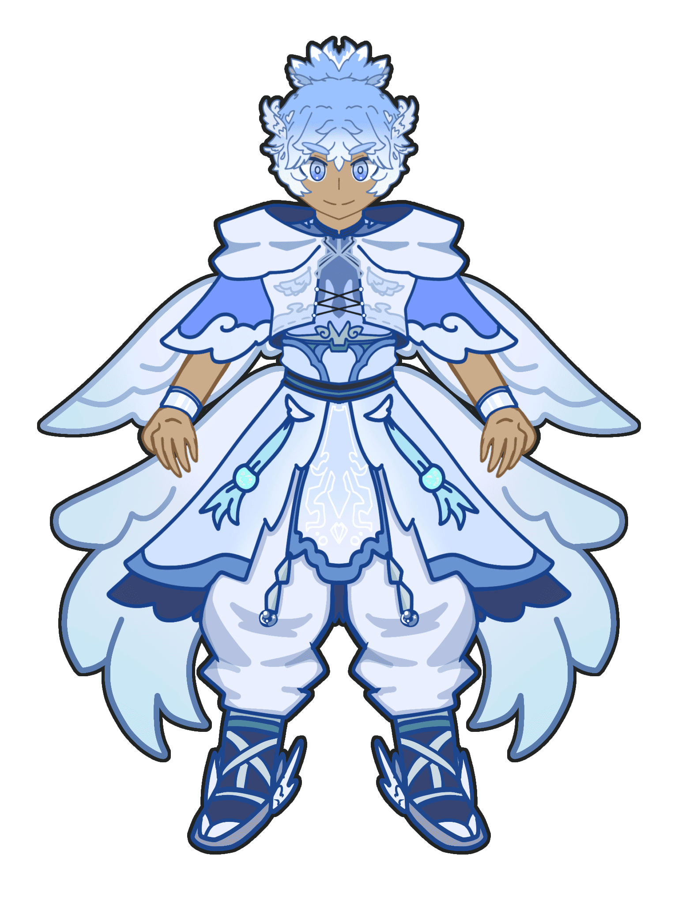
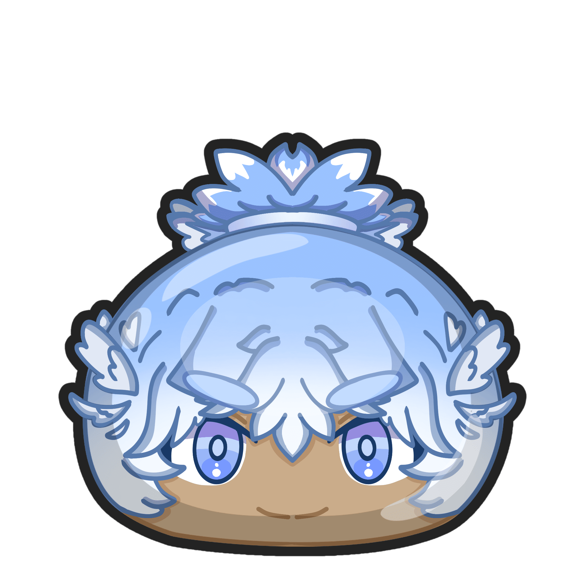
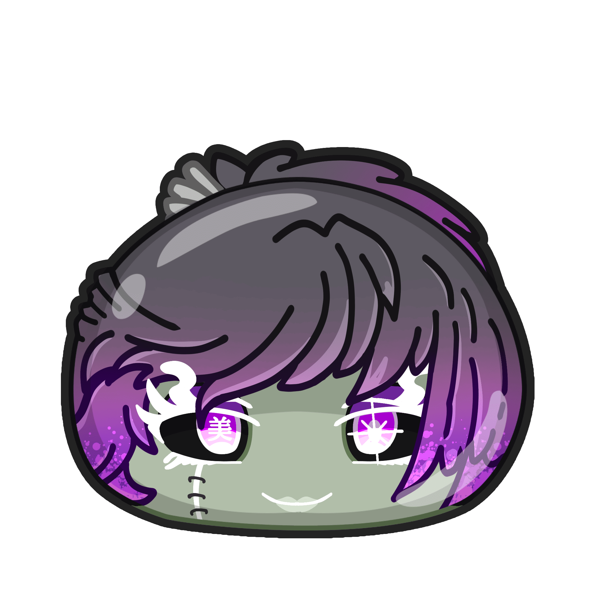
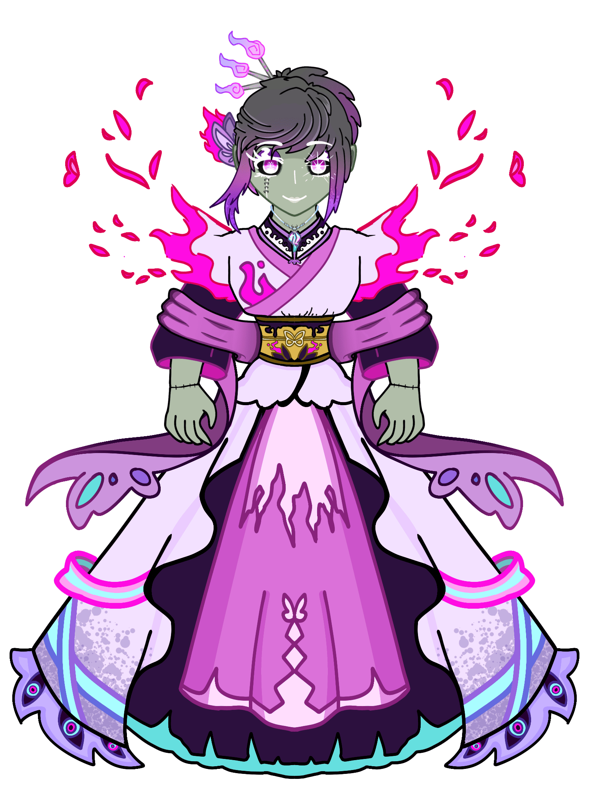

|

|

|
Denle la bienvenida a las alas del cielo, que ya llego el.
Yasu al momento de retar a shikabane vio la forma de no ser devorado por las llamas y mariposas de la muerte, alzandose al cielo, dejando todo lo que los limites le impedian, de forma angelical apago lo que las llamas habian ocasionado, purificando en el proceso todo el area del bosque luminoso.
Ven conmigo y abre tus ojos, que este mundo todavia no ha perdido su brillo.
- Nombre del Protagonista: Yasu hajime (forma pureza divina).
- Rango: Uz+.
- Tribu: Misterioso.
- Animaux: All popper 100 combos.
- Skills: Al usar su animaux cargas a otros y big link.
- PASIVA: Aumenta 4% de hp y 6% de ataque a la tribu misteriosa.
|
|
Presentamos a la encarnacion de la belleza, la que domina todo el area de bosques.
Shikabane fue creada con partes de miles de bellezas, una gran cantidad de almas y el concepto de la belleza, protectora del fragmento de la naturaleza.
Desde aquel terrible dia, ella fue la responsable de mandar a sus mariposas de la muerte para acabar con todo lo que no era bello, su percepcion de la belleza esta tan retorcida que aun teniendo todo lo bello, ella se siente vacia, como si le faltara algo.
Soy la NO VIVA imagen de la belleza..
- Nombre del ALTAR: Utsukushii shikabane.
- Rango: Uz.
- Tribu: Siniestra.
- Animaux: All popper recargador.
- Skills: Big link y mas daño por HP.
|

|

|